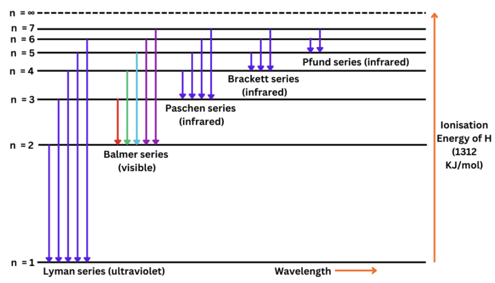

Atomic Structure
High-value revision
Atomic Structure exam map
This topic repeatedly tests only a few core engines: Bohr model,
spectrum, photoelectric effect, quantum numbers, electron
counting, and uncertainty ideas.
Before solving, first identify the bucket: radius / energy /
wavelength / work function / quantum-number validity /
configuration counting.
If the species is one-electron like \(\mathrm{H}\),
\(\mathrm{He^+}\), \(\mathrm{Li^{2+}}\), \(\mathrm{Be^{3+}}\), use
hydrogen-like formulas directly.
Hydrogen-like species: fastest radius rules
For hydrogen-like species, orbit radius follows \(r_n = a_0
\dfrac{n^2}{Z}\).
So radius comparison rule is: \(r \propto \dfrac{n^2}{Z}\).
Same-radius questions are solved by equating \(\dfrac{n^2}{Z}\).
Fast ratio form:
\(\dfrac{r_1}{r_2}=\dfrac{(n_1^2/Z_1)}{(n_2^2/Z_2)}\).
As \(n\) increases, radius increases strongly; as \(Z\) increases,
radius decreases.
Very common trap: using \(n/Z\) instead of \(n^2/Z\).
Hydrogen-like species: fastest energy rules
Orbit energy follows \(E_n = -13.6 \dfrac{Z^2}{n^2}\ \text{eV}\).
So energy comparison rule is: \(E \propto -\dfrac{Z^2}{n^2}\).
Same-energy questions are solved by matching \(\dfrac{Z^2}{n^2}\).
Higher \(n\) means energy becomes less negative.
Higher \(Z\) means electron is more tightly bound and energy
becomes more negative.
Energy gap questions usually reduce to subtracting two Bohr
energies.
Bohr transitions: what to do instantly
Excitation means electron goes upward and absorbs energy.
De-excitation means electron comes downward and emits energy.
Required excitation frequency: \(\nu = \dfrac{\Delta E}{h}\).
Emitted photon energy in a downward jump is simply the energy
difference of the two orbits.
If radii are given instead of orbit numbers, first convert radius
into \(n\) using \(r \propto n^2/Z\).
Hydrogen spectrum: absolute must-remember facts
Rydberg equation:
\(\dfrac{1}{\lambda}=RZ^2\left(\dfrac{1}{n_f^2}-\dfrac{1}{n_i^2}\right)\),
with \(n_i>n_f\).
Lyman series ends at \(n_f=1\).
Balmer series ends at \(n_f=2\).
Paschen series ends at \(n_f=3\).
First line means nearest upper level: \(2 \to 1\), \(3 \to 2\),
\(4 \to 3\).
Second line means next one: \(3 \to 1\), \(4 \to 2\), \(5 \to 3\).
Transition to smaller \(n_f\) usually means larger energy change
and shorter wavelength.
Do not subtract \(\dfrac{1}{\lambda}\) when the question asks for
difference in \(\lambda\).
Spectral line counting shortcuts
If an electron can jump among \(k\) allowed levels, total possible
lines \(= \dfrac{k(k-1)}{2}\).
Example logic: from sixth shell down to second shell,
participating levels are \(6,5,4,3,2\), so \(k=5\).
Then total lines \(= \dfrac{5 \cdot 4}{2}=10\).
These are pure counting questions; no Rydberg substitution is
needed unless wavelength is asked.
Photoelectric effect: one compact toolkit
Main equation: \(K_{\max}=h\nu-\phi=\dfrac{hc}{\lambda}-\phi\).
Threshold frequency: \(\nu_0=\dfrac{\phi}{h}\).
No emission happens if photon energy is below work function.
Quick exam shortcut:
\(E(\text{eV})=\dfrac{1240}{\lambda(\text{nm})}\).
If \(E>\phi\), leftover energy becomes photoelectron kinetic
energy.
Photoelectron speed comes from \(K_{\max}=\dfrac{1}{2}mv^2\).
Metal-screening questions are often solved by comparing each work
function directly with photon energy.
Radiation and photon relations
\(c=\nu\lambda\), so shorter wavelength means higher frequency.
\(\tilde{\nu}=\dfrac{1}{\lambda}\), so wave number increases when
wavelength decreases.
\(E=h\nu=\dfrac{hc}{\lambda}\), so shorter wavelength means higher
photon energy.
X-rays have much shorter wavelength and much higher energy than
microwaves.
Bulb-power or photons-per-second questions often reduce to \(P = n
h\nu\).
de Broglie and uncertainty: quick-use rules
de Broglie wavelength: \(\lambda=\dfrac{h}{p}\).
So momentum from wavelength is immediate:
\(p=\dfrac{h}{\lambda}\).
Heisenberg principle: \(\Delta x \Delta p \ge \dfrac{h}{4\pi}\).
If velocity uncertainty is given, first convert using \(\Delta p =
m \Delta v\).
For tiny particles like electrons, uncertainty matters; for
ordinary bodies, it is negligible.
Matter-wave phase velocity result often asked directly:
\(v_p=\dfrac{c^2}{v}\).
Quantum numbers: validity checklist
\(n=1,2,3,\dots\)
\(l=0\) to \(n-1\)
\(m_l=-l\) to \(+l\)
\(m_s=+\dfrac{1}{2}\) or \(-\dfrac{1}{2}\)
If \(l=n\) or \(l>n-1\), the set is impossible immediately.
\(l=0,1,2,3\) correspond to \(s,p,d,f\).
Probability density is \(|\psi|^2\), not \(|\psi|^3\).
Orbitals, nodes, and shell counting
Number of orbitals in a subshell \(=2l+1\).
Number of orbitals in shell \(n = n^2\).
Maximum electrons in shell \(n = 2n^2\).
Maximum spin-up electrons in a shell = number of orbitals in that
shell.
Radial nodes \(= n-l-1\).
Total nodes \(= n-1\).
Questions on \(l=0\) and \(l=2\) are really \(s\)-electron and
\(d\)-electron counting questions.
Electronic configuration: high-yield reminders
Aufbau order helps fill orbitals, but Cr and Cu are famous
exceptions.
Cr: \([Ar]\,3d^5 4s^1\).
Cu: \([Ar]\,3d^{10} 4s^1\).
Half-filled and fully filled subshells have extra stability.
\(n+l\)-based counting questions need the actual configuration,
not guesswork.
In hydrogen atom, orbitals of the same shell have the same energy;
in multi-electron atoms like He, they do not remain degenerate in
the same way.
Last-minute question-to-formula map
Orbit radius comparison → use \(r \propto \dfrac{n^2}{Z}\).
Orbit energy comparison → use \(E \propto -\dfrac{Z^2}{n^2}\).
Excitation or emission frequency → use \(\nu=\dfrac{\Delta
E}{h}\).
Spectral wavelength / series → use Rydberg equation and identify
final orbit.
Photoelectric threshold / speed / no-emission → use
\(K_{\max}=h\nu-\phi\).
de Broglie momentum → use \(p=\dfrac{h}{\lambda}\).
Uncertainty → use \(\Delta x \Delta p \ge \dfrac{h}{4\pi}\).
Quantum-number validity → check allowed ranges in the order
\(n,l,m_l,m_s\).
Common traps to avoid
Do not treat neutral helium like \(\mathrm{He^+}\); only
one-electron ions are hydrogen-like.
Do not forget the minus sign meaning in energy; more negative
means more tightly bound.
Do not confuse wave number with wavelength.
Do not forget to invert after finding \(\dfrac{1}{\lambda}\).
Do not use intensity in place of frequency in photoelectric-effect
energy questions.
Do not allow impossible quantum numbers such as \(l=n\).
PYQ links
2025
Question 121 - 2025, May 02 Shift 1
— radius relation between hydrogen and helium ion orbits
Question 122 - 2025, May 02 Shift 1
— photoelectron velocity from wavelength and work function
Question 121 - 2025, May 02 Shift 2
— identify spectral series using hydrogen orbit radius
Question 122 - 2025, May 02 Shift 2
— incorrect statement about wave function and orbitals
Question 121 - 2025, May 03 Shift 1
— excitation frequency needed for hydrogen first to fifth
orbit
Question 122 - 2025, May 03 Shift 1
— count strontium electrons with given azimuthal quantum
numbers
Question 121 - 2025, May 03 Shift 2
— wavelength difference between two hydrogen spectral
transitions
Question 122 - 2025, May 03 Shift 2
— metals not showing photoelectric effect under given light
Question 121 - 2025, May 04 Shift 1
— matching hydrogen second-orbit radius with hydrogen-like ion
Question 122 - 2025, May 04 Shift 1
— work function from radiation wavelength and kinetic energy
Question 121 - 2025, May 04 Shift 2
— truth of Rutherford and electromagnetic radiation statements
Question 122 - 2025, May 04 Shift 2
— emitted energy from hydrogen transition using orbit radii
2024
Question 121 - 2024, May 09 Shift 1
— equal-energy pair among hydrogen-like species and orbit
numbers
Question 122 - 2024, May 09 Shift 1
— Balmer-series wavelength expression using Rydberg formula
Question 121 - 2024, May 09 Shift 2
— threshold frequency from emitted-electron kinetic energy
Question 121 - 2024, May 10 Shift 1
— compare He+ Lyman and Li2+ Balmer wavenumbers
Question 122 - 2024, May 10 Shift 1
— speed accuracy from Heisenberg position uncertainty
Question 121 - 2024, May 10 Shift 2
— momentum of electron from de Broglie wavelength
Question 122 - 2024, May 10 Shift 2
— equality of 2s and 2p energies in H and He
Question 121 - 2024, May 11 Shift 1
— formula for number of radial nodes in orbitals
Question 122 - 2024, May 11 Shift 1
— first-orbit energy from hydrogen-like ion radius
2023
Question 121 - 2023, May 12 Shift 1
— compare hydrogen and helium-ion orbit radii using Bohr
relation
Question 122 - 2023, May 12 Shift 1
— ratio of photoelectron kinetic energies for two frequencies
Question 121 - 2023, May 12 Shift 2
— compare Balmer wavelength with He+ Lyman wavelength
Question 122 - 2023, May 12 Shift 2
— identify correct statements about spin orbitals photons
Lyman
Question 121 - 2023, May 13 Shift 1
— hydrogen first-orbit radius matched by hydrogen-like species
Question 122 - 2023, May 13 Shift 1
— impossible set among four quantum number combinations
Question 121 - 2023, May 13 Shift 2
— Bohr angular momentum of ground-state hydrogen electron
Question 122 - 2023, May 13 Shift 2
— ratio of hydrogen electron energies in first three orbits
Question 121 - 2023, May 14 Shift 1
— Li2+ first-orbit energy from hydrogen second-orbit energy
Question 122 - 2023, May 14 Shift 1
— chromium electrons counted using n plus l values
Question 121 - 2023, May 14 Shift 2
— photon wavelength from bulb power and photon count
Question 122 - 2023, May 14 Shift 2
— compare adjacent Bohr-orbit energy differences in hydrogen
2022
Question 121 - 2022, July 18 Shift 1
— excitation energy needed from second to third hydrogen orbit
Question 122 - 2022, July 18 Shift 1
— expression for velocity of de Broglie matter wave
Question 121 - 2022, July 18 Shift 2
— total number of hydrogen spectral lines between shells
Question 122 - 2022, July 18 Shift 2
— orbital angular momentum of electron in d subshell
Question 121 - 2022, July 19 Shift 1
— ratio of uncertainty in position and momentum
Question 122 - 2022, July 19 Shift 1
— valence shell configurations of chromium and copper
Question 121 - 2022, July 19 Shift 2
— radius and energy change from second to third orbit
Question 121 - 2022, July 20 Shift 1
— fourth-shell orbitals and maximum spin-up electrons count
Question 122 - 2022, July 20 Shift 1
— speed of light compared with first-orbit electron speed
General theory
Atomic models and electromagnetic radiation
Thomson proposed a diffuse positive model, but Rutherford
established a dense central nucleus with electrons around it.
Rutherford model explained scattering results but failed to
explain atomic stability because a revolving charged particle
should continuously lose energy.
Electromagnetic radiation is described by wavelength, frequency,
wave number, and energy.
Useful relations: \(c=\nu \lambda\),
\(\tilde{\nu}=\dfrac{1}{\lambda}\),
\(E=h\nu=\dfrac{hc}{\lambda}\).
Shorter wavelength means higher frequency, higher wave number, and
higher energy.
X-rays have much shorter wavelength than microwaves.
Bohr model for hydrogen and hydrogen-like species
Bohr postulated fixed stationary orbits in which electrons do not
radiate energy.
Only certain angular momentum values are allowed:
\(mvr=\dfrac{nh}{2\pi}\).
For hydrogen-like species:
\(r_n=a_0\dfrac{n^2}{Z}\)
\(E_n=-13.6\dfrac{Z^2}{n^2}\text{ eV}\)
\(v_n=\dfrac{Z}{n}\cdot \dfrac{c}{137}\)
This is why many EAPCET questions reduce to comparing
\(\dfrac{n^2}{Z}\) or \(\dfrac{Z^2}{n^2}\).
Same radius condition uses \(n^2/Z\); same energy condition uses
\(Z^2/n^2\).
Excitation moves electron upward and requires energy;
de-excitation moves it downward and releases energy.
Hydrogen spectrum and spectral series
Spectral lines arise when electrons jump between allowed Bohr
orbits.
Rydberg equation:
\(\dfrac{1}{\lambda}=RZ^2\left(\dfrac{1}{n_f^2}-\dfrac{1}{n_i^2}\right)\),
where \(n_i>n_f\)
Main hydrogen series:
Lyman: \(n_f=1\), ultraviolet region
Balmer: \(n_f=2\), visible region
Paschen: \(n_f=3\), infrared region
First line means nearest upper orbit. For example, first Lyman
line is \(2\to1\); second Balmer line is \(4\to2\).
Total spectral lines among \(k\) participating levels are
\(\dfrac{k(k-1)}{2}\).

Photoelectric effect and photon ideas
Light behaves as packets of energy called photons.
Einstein photoelectric equation:
\(K_{\max}=h\nu-\phi=\dfrac{hc}{\lambda}-\phi\)
\(\phi\) is the minimum energy needed to remove an electron from
the metal.
Threshold frequency is \(\nu_0=\phi/h\). Below this frequency,
electrons are not emitted.
Once \(K_{\max}\) is known, electron speed follows from
\(\dfrac{1}{2}mv^2\).
This chapter repeatedly tests threshold frequency, work function,
kinetic energy ratio, and identifying non-emitting metals.
de Broglie concept and Heisenberg uncertainty
Every moving particle shows wave nature with wavelength
\(\lambda=\dfrac{h}{p}\).
So if wavelength is given, momentum is immediate: \(p=h/\lambda\).
Matter-wave phase velocity is \(v_p=\nu\lambda=\dfrac{c^2}{v}\).
Heisenberg uncertainty principle:
\(\Delta x\, \Delta p \ge \dfrac{h}{4\pi}\)
For large everyday objects, uncertainty effects are tiny. For
electrons, they are significant.
Quantum mechanical model and quantum numbers
In the quantum model, electron position is described by a wave
function \(\psi\).
The measurable probability density is \(|\psi|^2\).
Quantum numbers:
Principal quantum number \(n\): shell and size
Azimuthal quantum number \(l\): subshell and shape
Magnetic quantum number \(m_l\): orientation
Spin quantum number \(m_s\): spin orientation of electron
Allowed values:
\(l=0\) to \(n-1\)
\(m_l=-l\) to \(+l\)
\(m_s=+\dfrac{1}{2}\) or \(-\dfrac{1}{2}\)
Any set violating these rules is impossible.
Number of orbitals in a subshell is \(2l+1\), and radial nodes are
\(n-l-1\).
Orbitals, shell capacities, and electron counting
Shell \(n\) contains \(n^2\) orbitals and can hold at most
\(2n^2\) electrons.
Maximum spin-up electrons in a given set of orbitals equals the
number of orbitals.
Useful mapping:
\(l=0\) means \(s\)-subshell
\(l=1\) means \(p\)-subshell
\(l=2\) means \(d\)-subshell
\(l=3\) means \(f\)-subshell
Questions may ask for electrons with a specific \(l\) value or a
specific \(n+l\) value.
Aufbau filling and important exceptions
Electrons fill orbitals in increasing order of energy, guided by
the Aufbau principle.
Pauli principle: no two electrons in an atom have all four quantum
numbers identical.
Hund rule: degenerate orbitals are singly occupied first with
parallel spins.
Important exceptions:
Cr: \([Ar]\,3d^5\,4s^1\)
Cu: \([Ar]\,3d^{10}\,4s^1\)
These exceptions are repeatedly tested directly in objective
questions.